library(ggplot2)
library(dplyr)
bikes <- readr::read_csv(
here::here("data", "london-bikes-custom.csv"),
col_types = "Dcfffilllddddc"
)
theme_set(theme_light(base_size = 14, base_family = "Asap SemiCondensed"))
theme_update(
panel.grid.minor = element_blank(),
plot.title = element_text(face = "bold"),
plot.title.position = "plot"
)Engaging and Beautiful Data Visualizations with ggplot2
Working with Colors
Setup
Default Color Palettes: Categorical
Default Color Palettes: Sequential

Pre-Defined
Color Palettes
The Viridis Color Palettes
![Figure 1 in Nuñez, Anderton & Renslow (2018) PLoS One: Example of a misleading colormap. Comparison between different colormaps overlaid onto the test image by Kovesi and a nanoscale secondary ion mass spectrometry image. Colormaps are as follows: (a) perceptually uniform grayscale, (b) jet, (c) jet as it appears to someone with red-green colorblindness, and (d) viridis [1], the current gold standard colormap. Below each NanoSIMS image is a corresponding “colormap-data perceptual sensitivity” (CDPS) plot, which compares perceptual differences of the colormap to actual, underlying data differences. m is the slope of the fitted line and r2 is the coefficient of determination calculated using a simple linear regression. An example of how the data may be misinterpreted are evident in the bright yellow spots in (b) and (c), which appear to represent significantly higher values than the surrounding regions. However, in fact, the dark red (in b) and dark yellow (in c) actually represent the highest values. For someone who is red-green colorblind, this is made even more difficult to interpret due to the broad, bright band in the center of the colormap with values that are difficult to distinguish.](img/viridis-performance.png)
The Viridis Color Palettes

The Viridis Color Palettes

Pre-Defined Color Palettes: Viridis
Pre-Defined Color Palettes: Viridis
Pre-Defined Color Palettes: Viridis
Pre-Defined Color Palettes: Viridis
Pre-Defined Color Palettes: Viridis

Pre-Defined Color Palettes: ColorBrewer

Pre-Defined Color Palettes: ColorBrewer
Pre-Defined Color Palettes: ColorBrewer
Pre-Defined Color Palettes: ColorBrewer
RColorBrewer::display.brewer.all()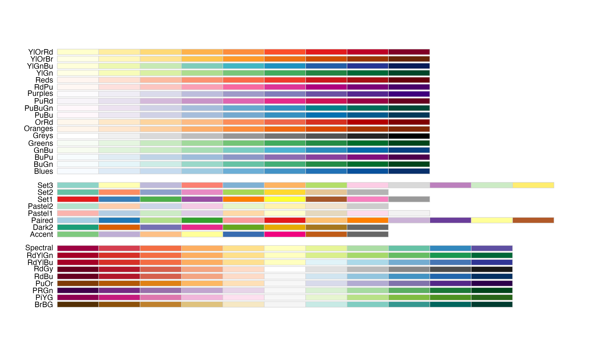
Pre-Defined Color Palettes: ColorBrewer
RColorBrewer::display.brewer.all(colorblindFriendly = TRUE)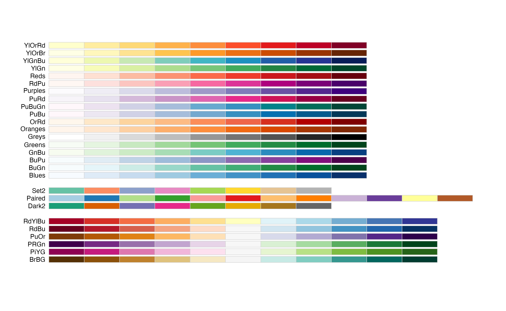
Pre-Defined Color Palettes: ColorBrewer

Pre-Defined Color Palettes: ColorBrewer

Palette Packages
{rcartocolor}
{rcartocolor}
rcartocolor::display_carto_all()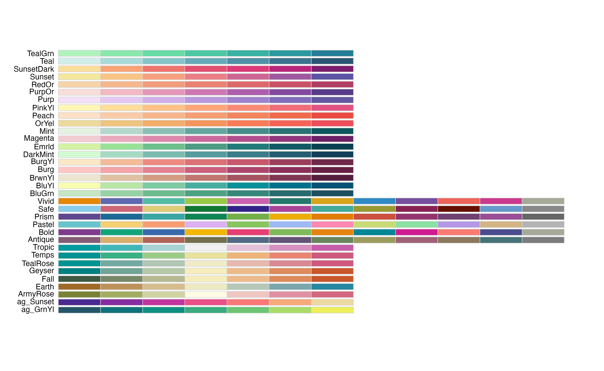
{rcartocolor}
rcartocolor::display_carto_all(colorblind_friendly = TRUE)
{rcartocolor}
{scico}

{scico}
scico::scico_palette_show()
{scico}

{ggsci} and {ggthemes}

{MetBrewer}

{MetBrewer}
MetBrewer::display_all()
{MetBrewer}
MetBrewer::display_all(colorblind_only = TRUE)
{MetBrewer}
Color Palette Quality
Evaluate HCL Spectrum
More on how to evaluate color palettes: HCLwizard and colorspace.
colorspace::specplot(
colorspace::diverging_hcl(
n = 100, palette = "Blue-Red"
)
)
colorspace::specplot(
MetBrewer::met.brewer(
n = 100, name = "Hiroshige"
)
)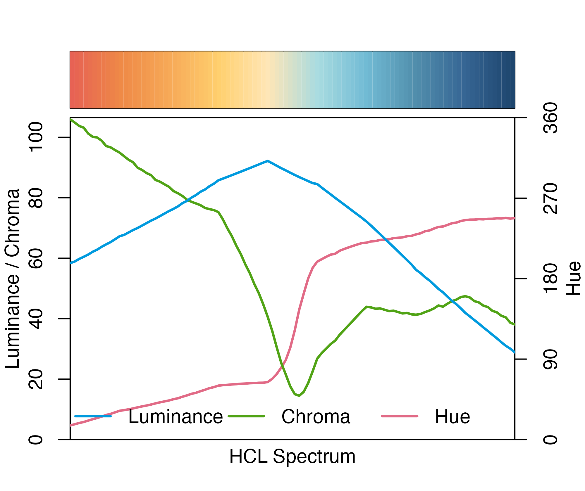
Evaluate HCL Spectrum
More on how to evaluate color palettes: HCLwizard and colorspace.
colorspace::specplot(
MetBrewer::met.brewer(
n = 100, name = "Cassatt2"
)
)
colorspace::specplot(
MetBrewer::met.brewer(
n = 100, name = "Veronese"
)
)
Evaluate HCL Spectrum
More on how to evaluate color palettes: HCLwizard and colorspace.
colorspace::specplot(
viridis::viridis(
n = 100, direction = -1
)
)
colorspace::specplot(
MetBrewer::met.brewer(
n = 100, name = "Hokusai3"
)
)
Evaluate HCL Spectrum
More on how to evaluate color palettes: HCLwizard and colorspace.
colorspace::specplot(
rainbow(
n = 100
)
)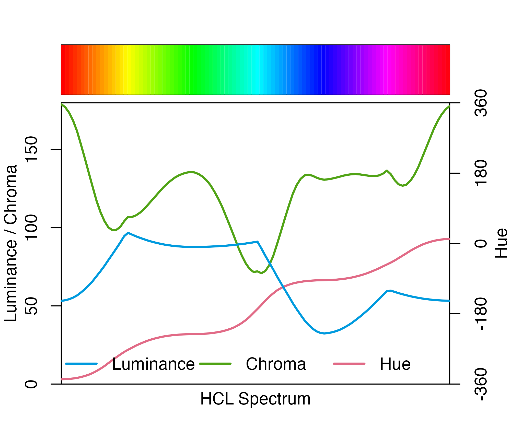
colorspace::specplot(
viridis::turbo(
n = 100, direction = -1
)
)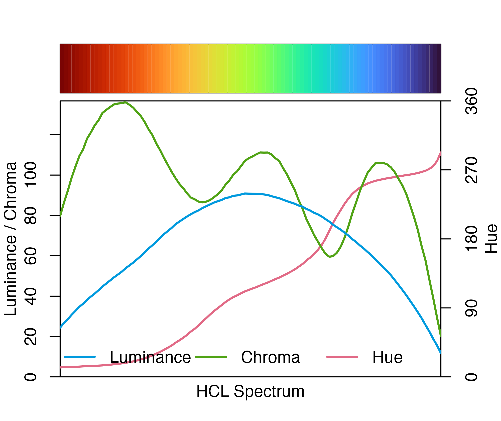
Customize Palettes
Customize Existing Palettes

Customize Existing Palettes

Customize Existing Palettes

Customize Existing Palettes

Customize Existing Palettes

Customize Existing Palettes

Customize Existing Palettes
Customize Existing Palettes

Customize Existing Palettes
Customize Existing Palettes
ggplot(bikes,
aes(x = day_night, y = count)) +
geom_boxplot(
aes(color = season,
fill = after_scale(
clr_lighten(color, .7)
)),
outlier.shape = NA
) +
geom_jitter(
aes(color = season,
color = after_scale(
clr_darken(color, .4)
)),
position = position_jitterdodge(
dodge.width = .75,
jitter.width = .2
),
alpha = .3, size = .6
) +
scale_color_manual(
values = carto_custom
) +
theme(legend.position = "top")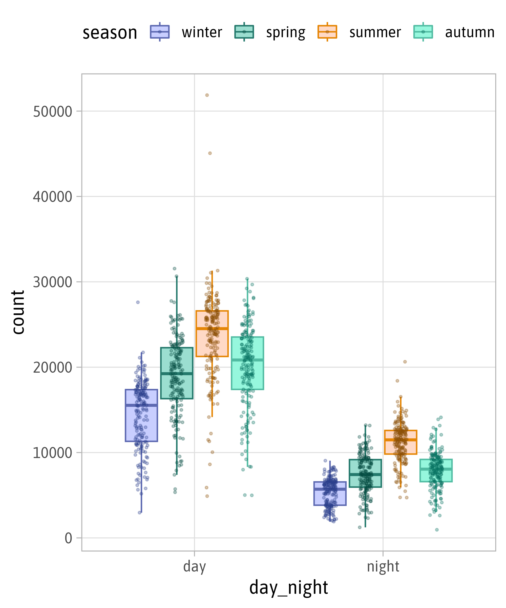
Create New Palettes
Create Sequential Palettes
Create Diverging Palettes
Create Diverging Palettes

Create Diverging Palettes

Evaluate HCL Spectrum
More on how to evaluate color palettes: HCLwizard and colorspace.
colorspace::specplot(
colorRampPalette(
c("#1D785A", "#FFCE52")
)(100)
)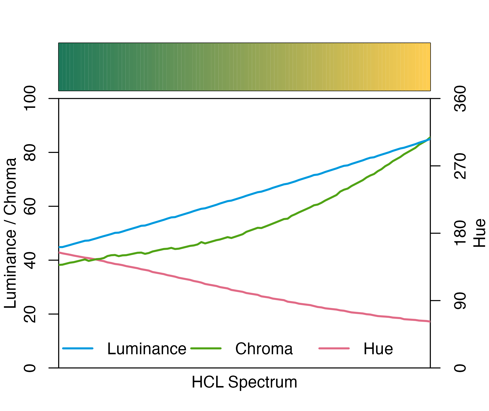
colorspace::specplot(
colorRampPalette(
c("#663399", "grey85", "#993334")
)(100)
)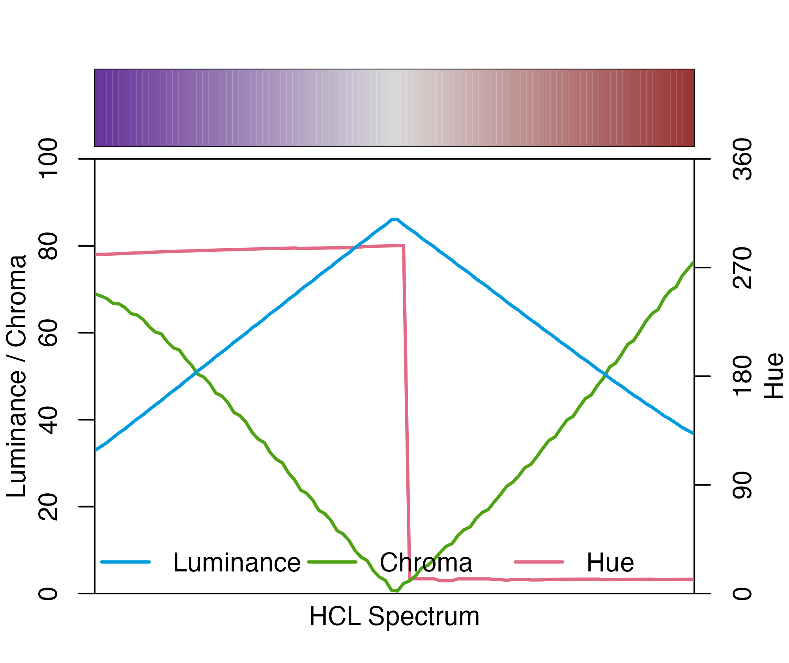
Create Any Palette

Create Any Palette
Create Any Palette

Build Your Own
Color Scales

Build Custom Color Scales
dubois_colors <- function(...) {
# define colors
dubois_cols <- c(
`black` = "#000000",
`purple` = "#582f6c",
`violet` = "#94679C",
`pink` = "#ef849f",
`softred` = "#f4b7a7",
`iceblue` = "#bccbf3",
`palegrey` = "#e4e4e4"
)
# if no colors are specified, return all
cols <- c(...)
if (is.null(cols)) return (dubois_cols)
# if colors are specified, return those
dubois_cols[cols]
}Build Custom Color Scales
plot(color(dubois_colors()))
Build Custom Color Scales
plot(color(dubois_colors("black", "violet", "softred", "iceblue", "palegrey")))
Build Custom Color Scales: Categorical
dubois_pal_d <- function(palette = "default", reverse = FALSE) {
# nested function to return colors via `dubois_pal_d()(n)`
function(n) {
# check if number of colors is sufficient
if(n > 5) stop('Palettes only contain 5 colors')
# check arguments
if (!palette %in% c("default", "dark", "light")) stop('palette should be "default", "dark" or "light".')
if (!is.logical(reverse) & !is.numeric(reverse)) stop('reverse should be logical or numeric')
# define palette styles
if (palette == "default") { pal <- dubois_colors("black", "violet", "softred", "iceblue", "palegrey")[1:n] }
if (palette == "dark") { pal <- dubois_colors(1:5)[1:n] }
if (palette == "light") { pal <- dubois_colors(3:7)[1:n] }
# return unnamed vector of color codes
pal <- unname(pal)
# check reverse argument
if (reverse) rev(pal) else pal
}
}Build Custom Color Scales: Categorical
plot(color(dubois_pal_d()(5)))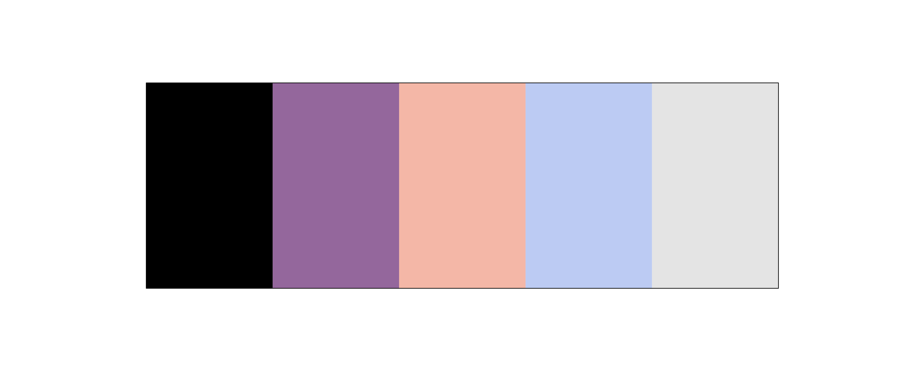
Build Custom Color Scales: Categorical
plot(color(dubois_pal_d(palette = "dark", reverse = TRUE)(5)))
Build Custom Color Scales: Categorical
scale_color_dubois_d <- function(palette = "default", reverse = FALSE, ...) {
# check arguments
if (!palette %in% c("default", "dark", "light")) stop('palette should be "default", "dark" or "light".')
if (!is.logical(reverse) & !is.numeric(reverse)) stop('reverse should be logical or numeric')
# retrieve color set
pal <- dubois_pal_d(palette = palette, reverse = reverse)
# apply to discrete scale
ggplot2::discrete_scale("colour", paste0("dubois_", palette), palette = pal, ...)
}Build Custom Color Scales: Categorical
scale_color_dubois_d <- function(palette = "default", reverse = FALSE, ...) {
# check arguments
if (!palette %in% c("default", "dark", "light")) stop('palette should be "default", "dark" or "light".')
if (!is.logical(reverse) & !is.numeric(reverse)) stop('reverse should be logical or numeric')
# retrieve color set
pal <- dubois_pal_d(palette = palette, reverse = reverse)
# apply to discrete scale
ggplot2::discrete_scale("colour", paste0("dubois_", palette), palette = pal, ...)
}
scale_fill_dubois_d <- function(palette = "default", reverse = FALSE, ...) {
if (!palette %in% c("default", "dark", "light")) stop('palette should be "default", "dark" or "light".')
if (!is.logical(reverse) & !is.numeric(reverse)) stop('reverse should be logical or numeric')
pal <- dubois_pal_d(palette = palette, reverse = reverse)
ggplot2::discrete_scale("fill", paste0("dubois_", palette), palette = pal, ...)
}Use Your Custom Color Scales: Categorical
Build Custom Color Scales: Sequential
dubois_pal_c <- function(palette = "dark", reverse = FALSE, ...) {
# check arguments
if (!palette %in% c("dark", "light")) stop('palette should be "dark" or "light".')
if (!is.logical(reverse) & !is.numeric(reverse)) stop('reverse should be logical or numeric')
# define palette styles
dubois_palettes <- list(
`dark` = dubois_colors("black", "purple", "violet", "pink"),
`light` = dubois_colors("purple", "violet", "pink", "palegrey")
)
# retrieve color set as unnamed vector
pal <- dubois_palettes[[palette]]
pal <- unname(pal)
# check reverse argument
if (reverse) pal <- rev(pal)
# create a color gradient with n colors
grDevices::colorRampPalette(pal, ...)
}Build Custom Color Scales: Sequential
plot(color(dubois_pal_c()(50)))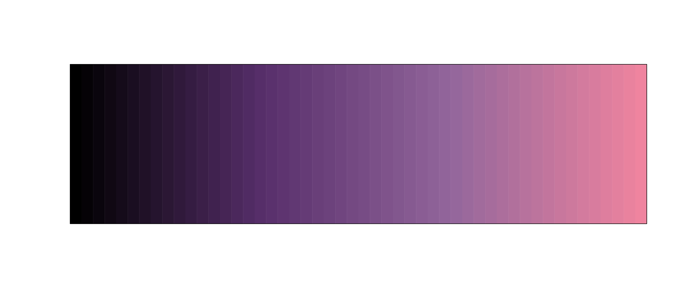
Build Custom Color Scales: Sequential
plot(color(dubois_pal_c(palette = "light", reverse = TRUE)(7)))
Build Custom Color Scales: Sequential
scale_color_dubois_c <- function(palette = "dark", reverse = FALSE, ...) {
# check function arguments
if (!palette %in% c("dark", "light")) stop('Palette should be "dark" or "light".')
if (!is.logical(reverse) & !is.numeric(reverse)) stop('reverse should be logical or numeric.')
# apply color set to ggplot's gradientn scale
pal <- dubois_pal_c(palette = palette, reverse = reverse)
ggplot2::scale_color_gradientn(colours = pal(256), ...)
}Build Custom Color Scales: Sequential
scale_color_dubois_c <- function(palette = "dark", reverse = FALSE, ...) {
# check function arguments
if (!palette %in% c("dark", "light")) stop('Palette should be "dark" or "light".')
if (!is.logical(reverse) & !is.numeric(reverse)) stop('reverse should be logical or numeric.')
# apply color set to ggplot's gradientn scale
pal <- dubois_pal_c(palette = palette, reverse = reverse)
ggplot2::scale_color_gradientn(colours = pal(256), ...)
}
scale_fill_dubois_c <- function(palette = "dark", reverse = FALSE, ...) {
if (!palette %in% c("dark", "light")) stop('Palette should be "dark" or "light".')
if (!is.logical(reverse) & !is.numeric(reverse)) stop('reverse should be logical or numeric.')
pal <- dubois_pal_c(palette = palette, reverse = reverse)
ggplot2::scale_fill_gradientn(colours = pal(256), ...)
}Use Your Custom Color Scales: Sequential
Use Your Custom Color Scales: Sequential

Evaluate HCL Spectrum
More on how to evaluate color palettes: HCLwizard and colorspace.
colorspace::specplot(
dubois_pal_c()(100)
)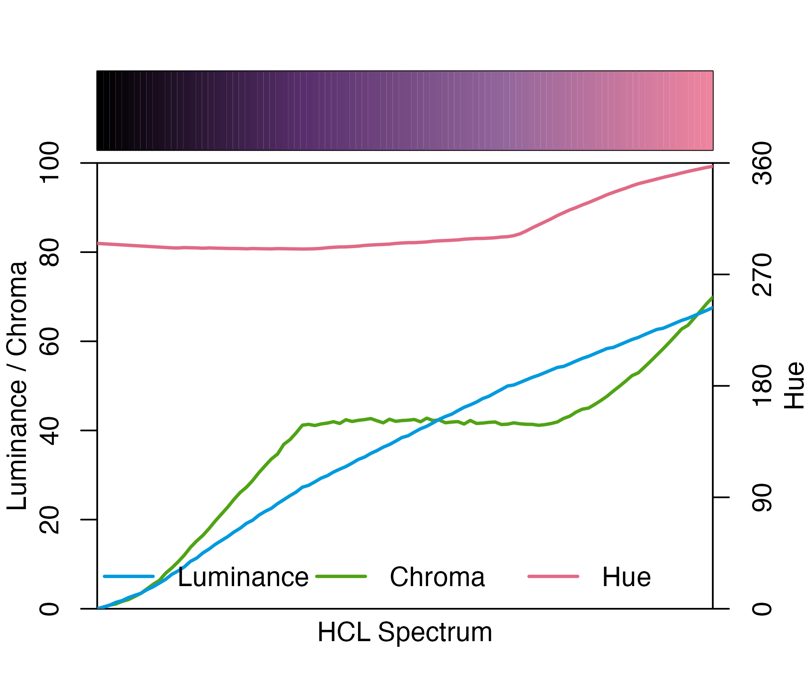
colorspace::specplot(
dubois_pal_c(palette = "light")(100)
)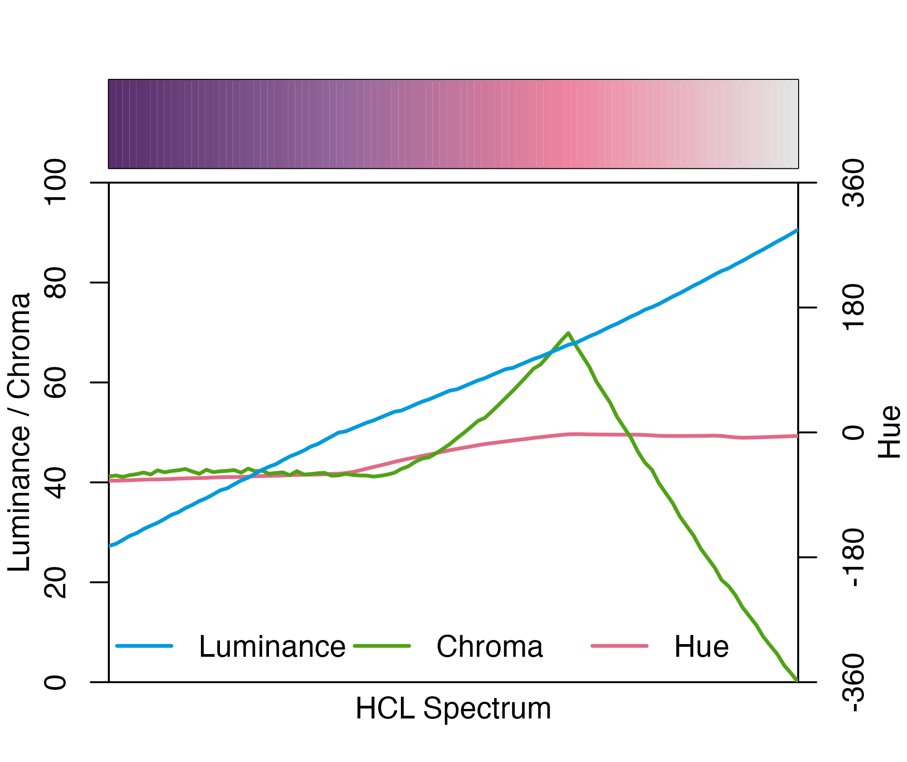
Design Colorblind-Friendly Graphics
Emulate CVD
Emulate CVD
g1 <-
ggplot(filter(bikes, is_weekend == TRUE),
aes(x = temp_feel, y = count,
color = humidity)) +
geom_point(alpha = .7) +
scale_color_dubois_c()
g1
Emulate CVD
colorblindr::cvd_grid(g1)
Emulate CVD
colorBlindness::cvdPlot(g1)
Emulate CVD
g2 <-
ggplot(bikes,
aes(x = day_night, y = count,
fill = season)) +
geom_boxplot() +
scale_fill_manual(
values = carto_custom
)
g2
Emulate CVD
colorblindr::cvd_grid(g2)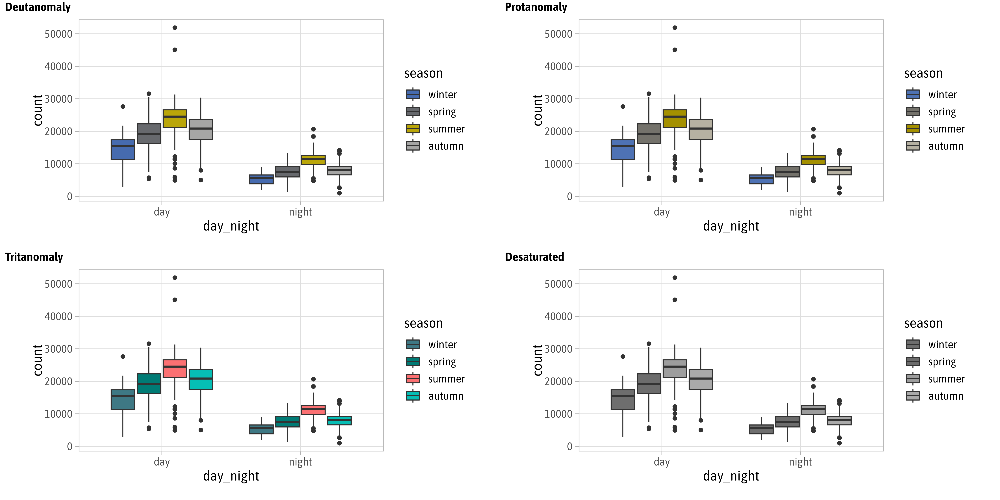
Emulate CVD
g3 <-
ggplot(bikes,
aes(x = temp_feel, y = count,
color = season)) +
geom_point(
alpha = .5, size = 1.5
) +
stat_smooth(
aes(group = day_night),
method = "lm", color = "black"
) +
scale_color_manual(
values = c("#6681FE", "#1EC98D", "#F7B01B", "#A26E7C")
)
g3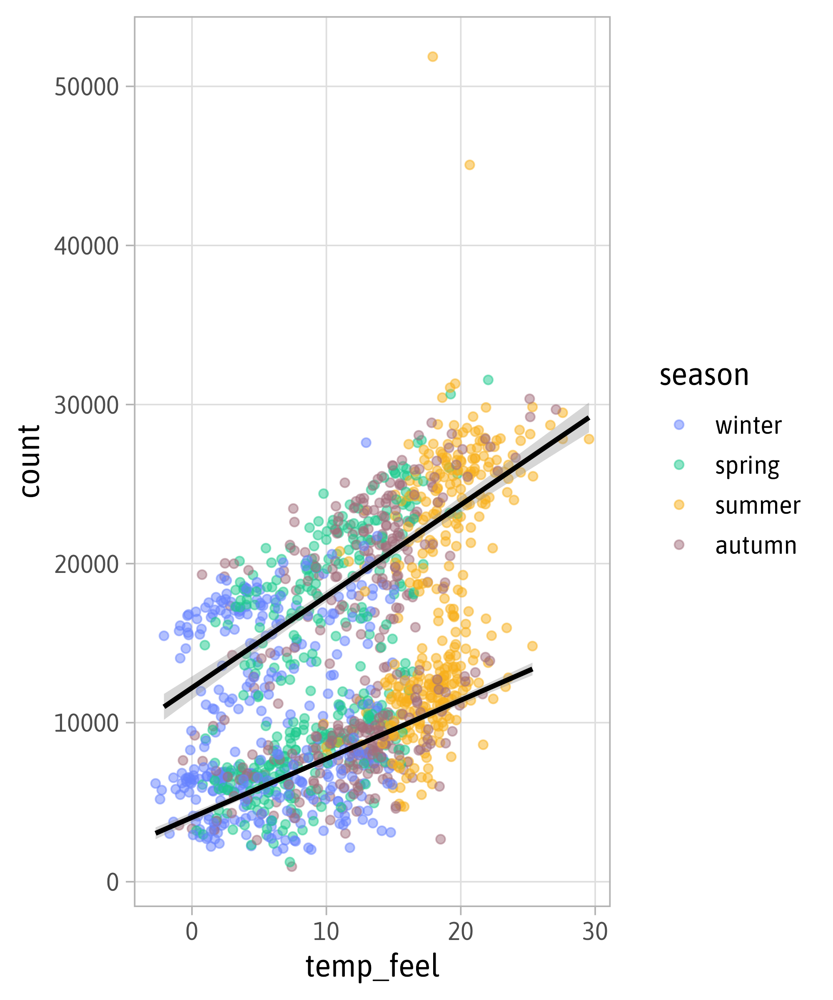
Emulate CVD
colorblindr::cvd_grid(g3)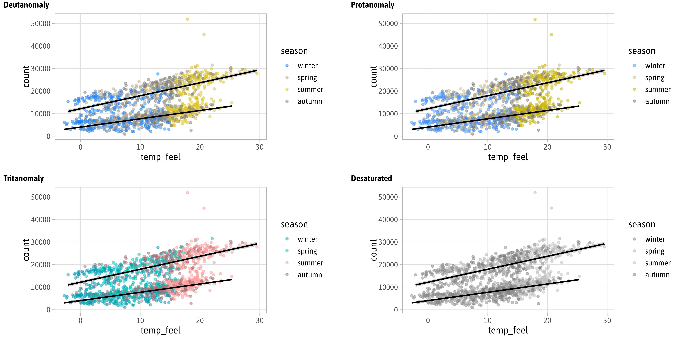
Recap
- use categorical palettes for qualitative data
e.g.scale_*_manual()orscale_*_brewer() - use sequential or diverging palettes for quantitative data
e.g.scale_*_gradient|gradient2()orscale_*_viridis_c - various packages provide palettes incl.
scale_*components
e.g.{rcartocolors},{scico},{ggsci}and{MetBrewer} - color packages return palettes as vectors that can be modified and supplied to
scale_*_manual()andscale_*_gradientn() - use
after_scaleto modify and recycle color scales - evaluate palette quality with {colorspace} (HCL) and {colorblindr} (CVD)
Exercises
Exercise 1
- Add colors to our bar chart from the last exercise:

Exercise 2
- Create a plot of your choice with a sequential (non-default) color palette.
- Inspect the HCL spectrum. Adjust the palette if needed.
- Test the palette with regard to colorblindness. Adjust the palette if needed.
- Save and share the graphic.